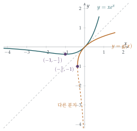

STEP II 2021, 문제 4
다음으로 넘어가기 전에 문제를 먼저 읽어 보자. 이 문제는 OCR에서 내려받을 수 있는 2021년 STEP 문제지 모음(zip 파일)의 STEP II 문제지에 있다: www.ocr.org.uk/Images/696588-2021-past-papers.zip
도입
\(e^{-x} = 5x\)를 풀 수 있을까? 계산기에 있는 어떤 함수로도 풀 수 없다. 식을 이리저리 정리해 보아도 소용없다. \(x\)가 지수함수의 안과 밖에 동시에 갇혀 있기 때문이다. 시행착오(trial and improvement)로 수치적인 답을 찾을 수는 있지만, “공식”은 없다.
정말 그럴까? 이 문제는 대담한 한 걸음을 내딛는다. 어떤 방정식들의 모임이 알려진 함수로 나타낸 해를 갖지 않는다면, 그 방정식들을 푸는 새로운 함수를 만들어 내는 것이다. 수학자들이 \(\sqrt{x}\)(\(x^2\)의 역함수), \(\ln x\)(\(e^x\)의 역함수), \(\arcsin x\)를 가지고 한 일이 바로 이것이다. 여기서 새로 등장하는 함수는 \(xe^x\)의 역함수(inverse function)로, 오늘날 람베르트 W 함수(Lambert W function)라고 부른다. 이 함수만 있으면 \(x^x = 10\)에서부터 물리 법칙에 이르기까지 놀라울 만큼 다양한 방정식을 정확하게 풀 수 있다.
시작하기 전에
방정식을 “푼다”는 것은 정확히 무슨 뜻일까? \(x = \sqrt{2}\)는 \(x^2 = 2\)의 해일까, 아니면 단지 그 해에 붙인 이름일까?
둘 다이다. \(\sqrt2\)는 “제곱하면 \(2\)가 되는 양수”에 붙인 이름이다. 우리가 이것을 답으로 받아들이는 까닭은 함수 \(\sqrt{\phantom{x}}\)를 잘 이해하고 있고, 값을 계산하기 쉬우며, 그 성질이 알려져 있기 때문이다. 어떤 답을 “공식”으로 볼지는 우리가 어떤 함수들에 이름을 붙이기로 합의했는지에 달려 있다. 이 문제는 그 목록에 함수를 하나 더 보탠다.
차근차근 풀기
단계 1 곡선 \(y = xe^x\)
\(\frac{\mathrm{d}y}{\mathrm{d}x} = e^x + xe^x = (1 + x)e^x\)이고, 이는 \(x = -1\)에서만 0이 되며, 이때 \(y = -e^{-1}\)이다. 도함수(derivative)는 \(x < -1\)에서 음수이고 \(x > -1\)에서 양수이므로, 이 점은 극소(minimum)이다.
\(x \to +\infty\)일 때와 \(x \to -\infty\)일 때 \(xe^x\)는 어떻게 될까? 곡선은 좌표축과 어디에서 만날까?
\(x \to \infty\)일 때 \(xe^x \to \infty\)이다. \(x \to -\infty\)일 때는 지수적 감소가 일차적 증가를 이기므로 \(xe^x \to 0\)이며, 아래쪽에서 0에 다가간다. 곡선은 원점을 지난다. 따라서 곡선은 \(x\)축의 음의 부분 바로 아래에서 들어와 최솟점 \((-1, -\frac1e)\)까지 내려간 다음, \((0, 0)\)을 지나 위로 가파르게 솟아오른다(그림 3.9.1).
단계 2 역함수
역함수를 가지려면 \(\mathrm{f}\)는 일대일(one-to-one)이어야 하므로, 순증가하거나 순감소하는 구간으로 정의역을 제한해야 한다. 오른쪽 부분을 포함하는 그런 구간 가운데 가장 큰 것은 \([-1, \infty)\)이므로 \(a = -1\)이다. \([-1, \infty)\)에서 \(\mathrm{f}\)는 \(-\frac1e\)에서 \(\infty\)까지 증가하므로, 역함수 \(\mathrm{g}\)는 \([-\frac1e, \infty)\)에서 정의되고, \(\mathrm{g}(-\frac1e) = -1\)에서 시작하여 증가하면서 \(\mathrm{g}(0) = 0\)을 지나고, 천천히 커진다(큰 \(x\)에 대해서는 \(\ln x\)보다도 더 천천히 커진다). 그 그래프는 \(y = xe^x\)의 오른쪽 부분을 직선 \(y = x\)에 대하여 대칭이동한 것이며, \((-\frac1e, -1)\)에서 수직인 접선(tangent)을 가진다.
\(\mathrm{g}\)를 정의하는 성질은 다음과 같다. \[\mathrm{g}(z)\,e^{\mathrm{g}(z)} = z, \qquad \mathrm{g}(z) \geq -1.\] 따라서 (iii)의 모든 소문항에 대한 전략은 같다. 방정식을 \((\text{어떤 것})\,e^{(\text{같은 그것})} = (\text{어떤 수})\)의 꼴로 정리하는 것이다.

단계 3 네 개의 방정식
(a) \(e^{-x} = 5x\). 양변에 \(e^x\)를 곱하고 \(5\)로 나누면 \(xe^x = \frac15\)이다. 따라서 \(x = \mathrm{g}\bigl(\frac15\bigr) \approx 0.169\)이다. \(x < 0\)에서 \(xe^x\)는 음수이므로 근은 모두 양수이고, \(x > 0\)에서 \(xe^x\)는 증가하므로 이것이 유일한 근이다.
(b)와 (c)에서 미지수는 \(x\ln x\)의 꼴로 나타난다. 어떤 치환(substitution)을 하면 \(x\ln x\)가 \(ue^u\) 꼴이 될까?
\(x = e^u\)로 놓으면 \(\ln x = u\)이고 \(x\ln x = ue^u\)이다.
(b) \(2x\ln x + 1 = 0\)은 \(ue^u = -\frac12\)가 된다. 그런데 모든 실수 \(u\)에 대하여 \(ue^u \geq -\frac1e \approx -0.368\)이고, \(-\frac12 < -\frac1e\)이다. 따라서 실근은 없다.
(c) \(3x\ln x + 1 = 0\)은 \(ue^u = -\frac13\)이 되고, \(-\frac1e < -\frac13 < 0\)이다. 높이 \(-\frac13\)인 수평선은 \(y = ue^u\)와 두 번 만나는데, \(u = -1\)에서의 최솟점 양쪽에서 한 번씩 만난다. 오른쪽 근은 \(u = \mathrm{g}\bigl(-\frac13\bigr)\)이므로 \[x = e^{\mathrm{g}(-1/3)} \approx 0.538\] 이다. 다른 근에서는 \(u < -1 < \mathrm{g}\bigl(-\frac13\bigr)\)이고, \(x = e^u\)는 \(u\)에 대하여 증가하므로, 우리가 구한 근은 두 근 가운데 더 큰 근이다. (다른 근은 약 \(0.220\)이다.)
이제 (d) \(x = 3\ln x\)를 풀어 보자. (힌트: 양변을 지수로 올린 다음, \((\text{어떤 것})\,e^{\text{어떤 것}}\)의 꼴을 만들되 그 “어떤 것”이 \(x\)의 상수배가 되도록 하라.)
(d) \(x = 3\ln x\)는 \(e^{x/3} = x\)를 뜻하므로 \(xe^{-x/3} = 1\)이고, 양변에 \(-\frac13\)을 곱하면 \[\left(-\frac x3\right)e^{-x/3} = -\frac13\] 이다. 따라서 \(-\frac x3\)은 (c)에서 찾은 \(ue^u = -\frac13\)의 두 해 가운데 하나이다. \(\mathrm{g}\)로 주어지는 해를 택하면 \(x = -3\,\mathrm{g}\bigl(-\frac13\bigr) \approx 1.857\)이다. 다른 근은 다른 해 \(u < \mathrm{g}(-\frac13)\)에서 나오며, 이는 더 큰 \(x = -3u\)를 준다. 따라서 이번에는 우리가 구한 근이 두 근 가운데 더 작은 근이다. (다른 근은 약 \(4.536\)이다.)■
단계 4 \(x^x = 10\)
양변에 로그를 취하면 \(x\ln x = \ln 10\)이다. \(x = e^u\)로 놓으면 이는 \(ue^u = \ln 10\)이므로 \(u = \mathrm{g}(\ln 10)\)이고 \[x = e^{\mathrm{g}(\ln 10)} \approx 2.506\] 이다. \(\mathrm{g}(z)e^{\mathrm{g}(z)} = z\)이므로 이를 \(x = \dfrac{\ln 10}{\mathrm{g}(\ln 10)}\)로 쓸 수도 있다.■
돌아보기
없는 함수에 이름을 붙여라. 알려진 함수로 방정식을 풀 수 없을 때, 역함수로서 새로운 함수를 정의하는 것은 정당한 방법이며, 흔히 많은 것을 밝혀 주는 방법이다.
표준형으로 정리하라. (iii)과 (iv)의 모든 소문항은 \(x = e^u\)나 \(u = -\frac x3\) 같은 치환을 써서 결국 \(ue^u = \text{상수}\)로 귀결되었다.
그래프로 근의 개수를 세어라. \(ue^u = c\)의 해가 0개, 1개, 2개 가운데 몇 개인지는 오로지 \(c\)가 최솟값 \(-\frac1e\)에 대하여 어디에 있는지에만 달려 있다.
숨은 수학
요한 하인리히 람베르트(Johann Heinrich Lambert)는 1758년에 이런 꼴의 방정식을 연구하였고, 오일러(Euler)는 1783년에 이를 더 발전시켰다. 그러나 이 함수는 1990년대까지 표준적인 이름이 없었는데, 그때 컴퓨터 대수 시스템 Maple의 개발자들에게 이름이 필요해졌다. 1996년에 Robert Corless, Gaston Gonnet, David Hare, David Jeffrey, 그리고 도널드 커누스(Donald Knuth)는 이 함수의 성질과 응용을 정리한 논문 “On the Lambert W function”을 발표하였다. 이 논문은 수천 번 인용되었고, 이제 W는 대부분의 수학 소프트웨어에 내장되어 있다. 문제의 함수 \(\mathrm{g}\)는 주분지(principal branch) \(W_0\)이다. 그림 3.9.1의 점선 곡선은 (c)와 (d)에서 두 번째 근을 주었는데, 이것이 또 하나의 실수 분지 \(W_{-1}\)이다.
W가 나타나는 곳
빈의 변위 법칙(Wien’s displacement law). 뜨거운 물체가 가장 강하게 복사하는 파장은 그 물체의 온도에 반비례한다. 그 비례상수는 \(5(1 - e^{-x}) = x\)를 풀어서 얻는데, 이 방정식의 양의 해는 \(x = 5 + W\bigl(-5e^{-5}\bigr) \approx 4.965\)이다. 약 \(5800\) K인 태양이 노르스름한 흰색으로 보이고, 더 차가운 적색 왜성이 붉게 보이는 까닭이 여기에 있다.
거듭제곱 탑. 무한히 쌓은 탑 \(x^{x^{x^{\cdot^{\cdot^{\cdot}}}}}\)은 \(e^{-e} \leq x \leq e^{1/e}\)일 때 수렴(converge)하고, 그 값은 \(\dfrac{W(-\ln x)}{-\ln x}\)이다.
인구 모형과 전염병 모형. 가장 단순한 모형에서 전염병의 최종 규모와, 몇몇 성장 모형에서 주어진 인구에 도달하는 데 걸리는 시간은 모두 W로 주어진다.
초등함수
\(W\)는 정말 새로운 함수일까, 아니면 \(\exp\), \(\ln\), 거듭제곱근, 삼각함수를 써서 나타낼 수 있을까? 이 함수는 진정으로 새로운 함수이다. 1830년대의 리우빌(Joseph Liouville)까지 거슬러 올라가는 정리에 따르면 \(W\)는 초등함수(elementary function)가 아니다. 같은 이론에 따르면 \(\int e^{-x^2}\,\mathrm{d}x\)처럼 겉보기에 순진해 보이는 어떤 적분들은 초등함수로 계산할 수 없으며, 정규분포에 고유한 특수함수가 필요한 것도 이 때문이다.
사고 기술
\(\mathrm{f}\)를 일대일이 되도록 제한하기만 하면, 방정식 \(\mathrm{f}(x) = c\)의 해는 \(x = \mathrm{f}^{-1}(c)\)이다. 어떻게 제한하느냐에 따라 어떤 해를 얻는지가 정해진다.
겉보기에 달라 보이는 많은 방정식이 사실은 모습만 바꾼 같은 방정식이다. 공통된 꼴을 드러내 주는 치환을 찾는 것이 핵심 단계이다.
더 도전하기
2, 4, 그리고 하나 더. 방정식 \(x^2 = 2^x\)는 자명한 해 \(x = 2\)와 \(x = 4\)를 가진다(3.5 절와 비교해 보라). 이 방정식이 음의 해도 가지며, 그 해가 \[x = -\frac{2}{\ln 2}\,\mathrm{g}\!\left(\frac{\ln 2}{2}\right) \approx -0.767\] 임을 보여라.
도함수. \(\mathrm{g}(x)e^{\mathrm{g}(x)} = x\)를 음함수 미분(implicit differentiation)하여, \(x \neq 0\)일 때 \[\mathrm{g}'(x) = \frac{\mathrm{g}(x)}{x\bigl(1 + \mathrm{g}(x)\bigr)}\] 임을 보여라. \(x = -\frac1e\)에서는 어떤 일이 일어나는가?
적분. 치환 \(x = we^w\)를 이용하여 \(\displaystyle\int_0^e \mathrm{g}(x)\,\mathrm{d}x = e - 1\)임을 보여라.
탑. 탑 \(T = \sqrt2^{\sqrt2^{\sqrt2^{\cdots}}}\)이 수렴한다고 가정하고, \(T = \sqrt2^{\,T}\)임을 보인 다음, \(T = 2\) 또는 \(T = 4\)임을 이끌어 내어라. 어느 쪽일까? (수열 \(t_1 = \sqrt2\), \(t_{n+1} = \sqrt2^{\,t_n}\)의 몇몇 항을 계산해 보고, 2.2 절의 거미줄 그림(cobweb diagram)을 생각해 보라.)
더 읽을거리
Robert Corless et al., “On the Lambert W function”, Advances in Computational Mathematics 5 (1996). 이 함수에 이름을 붙인 논문이다. 이 절을 공부했다면 앞부분은 읽을 수 있다.
Brian Hayes, “Why W?”, American Scientist 93 (2005). 이 함수의 역사와 쓰임새를 다룬 생동감 있는 에세이(“왜 W인가?”)이다. 온라인에서 무료로 볼 수 있다.
Brian Conrad, “Impossibility theorems for elementary integration”. 리우빌의 이론을 설명하는 강의 노트(초등 적분의 불가능성 정리)로, 온라인에서 볼 수 있다. 고급 수준이다.